Support states and the grace period#
This page explains how a version moves through the states Active, Security, Eol and EolGraceExpired, and what the reader does with versions it has never heard of.
With Arms Wide Open#
The support window stays open until security_until. A version is still Security on that day, moves to Eol the day after, and stays in Eol for eol_grace_days (90) more days before it is EolGraceExpired. The boundary is inclusive, and the reader never guesses.

Form CR-1, as the front page fills it in: four real rows of policy/policy.json, the same answers Policy::stateOf gives, stamped.
Versions CREED hasn't heard of#
The reader refuses what it does not know, except the newest thing and the oldest. A version that sorts above every line the policy lists is Active, and isAheadOfPolicy() says so. A version that parses and sorts below every listed line is Eol: it is older than the oldest listed line, and that is end of life by definition. belowOldestLineReason() gives the reason, older than the oldest listed line (8.1). A version that falls between listed lines, or that does not parse, is still unknown, and still throws. Current versions are never refused.
A line marked "current": true is Active on every date and carries no security_until: the policy says the line is current, and the reader does not guess when it stops being so.
Higher#
CREED itself requires PHP ^8.3, like every stack package, and CI tests it on 8.3, 8.4 and 8.5. The policy's floor for apps is a different number: ^8.2 until PHP 8.2 reaches end of life on 2026-12-31, then ^8.3. Creed has always been one version ahead of everyone else, at least by his own account.